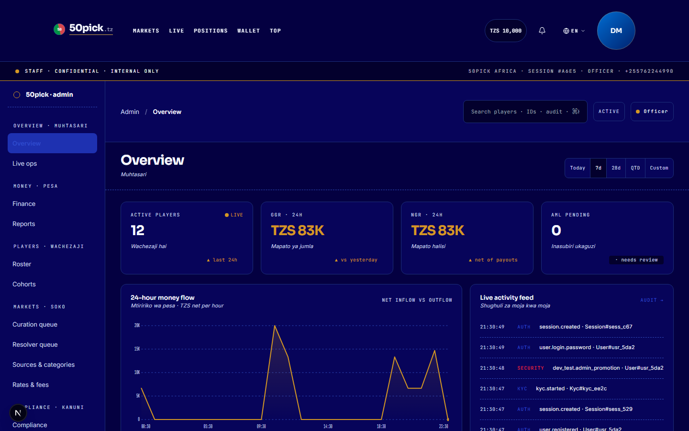
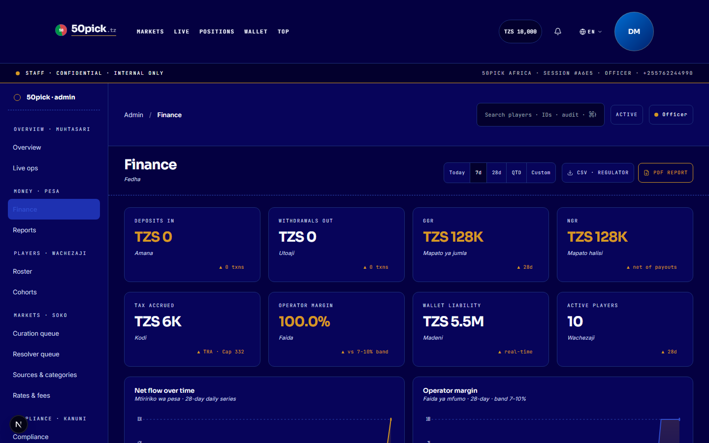
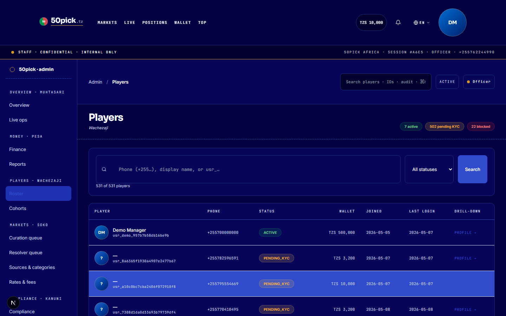
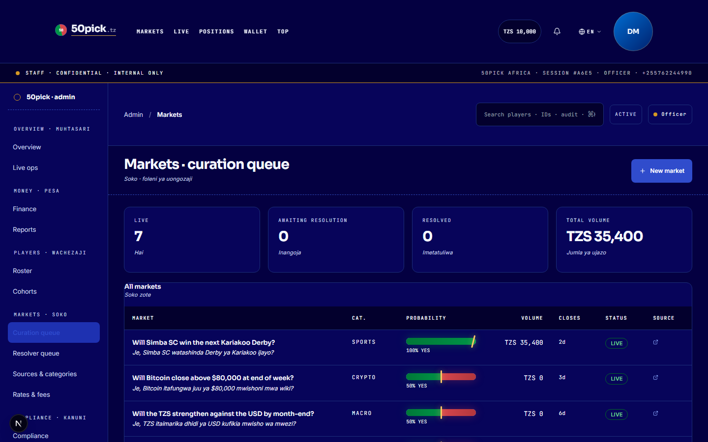
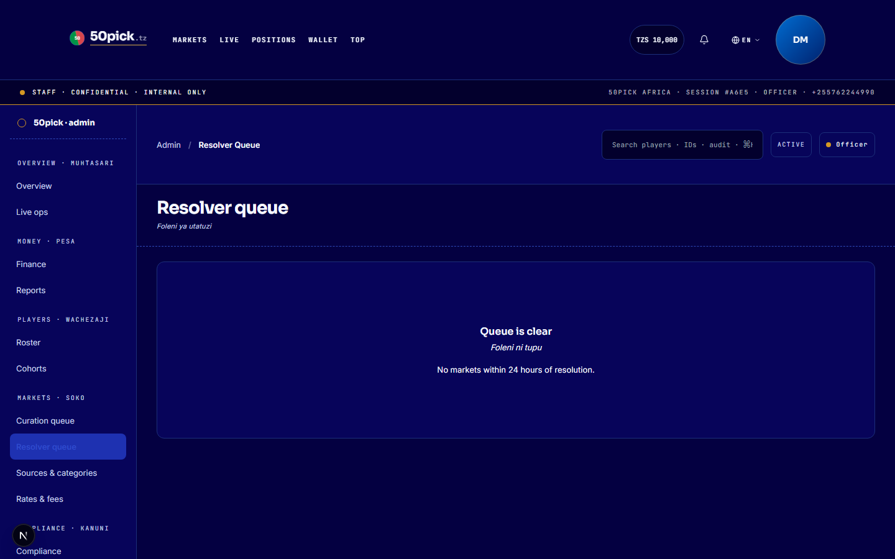
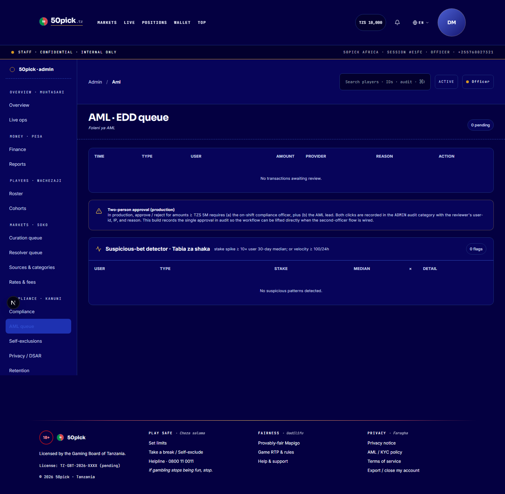
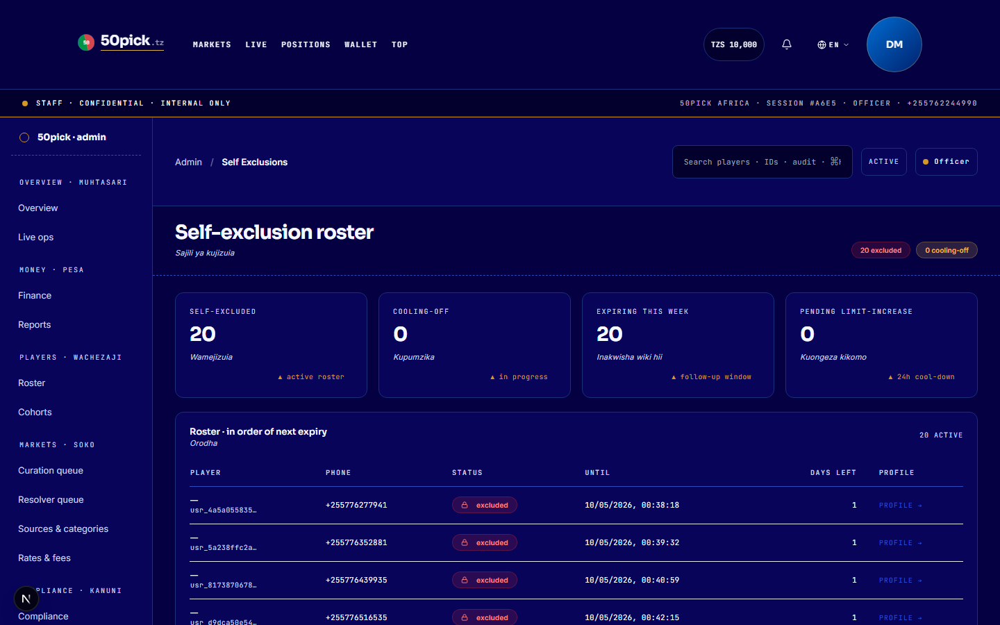
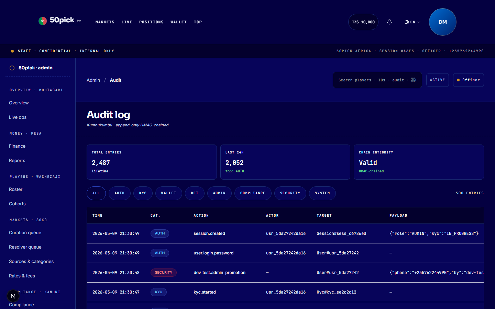
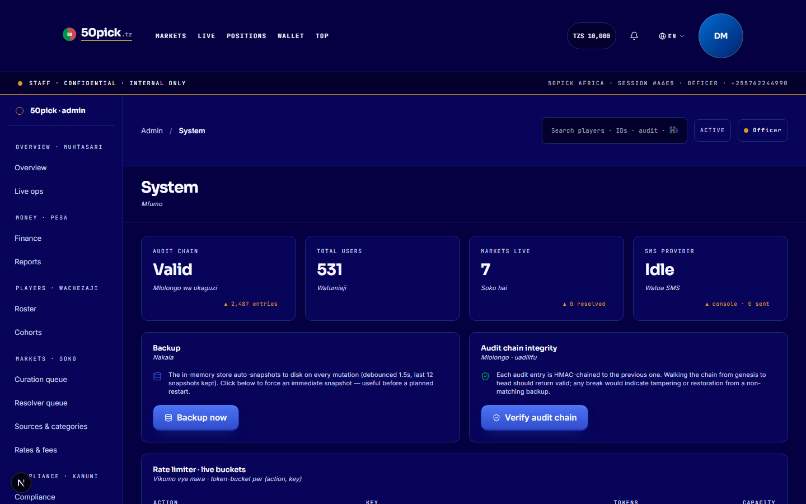

User manual · Admin
A screenshot-led walk-through of the operator console — every page you'll touch as staff. What's there, what each control does, what the regulator-side audit trail looks like. Internal, confidential.
The operator console is split into nine areas, each reachable from the left sidebar. Every action you take is logged in an append-only audit trail with your user ID, the time, and the change you made.
| Area | What's there |
|---|---|
| Overview | Live volume, predictor counts, market health. |
| Finance | Stakes, payouts, operator margin, withholding tax. Daily & monthly views. |
| Players | Search, drill into any account, see wallet, KYC, positions, audit trail. |
| Markets | Create new markets, edit, void, archive. Resolution-source registry. |
| Resolver queue | Two-officer market resolution. Stage 1 stages the outcome; Stage 2 settles. |
| AML | Threshold-flagged transactions waiting for compliance review. |
| Self-exclusions | Active player exclusions. Cannot be lifted while active. |
| Audit log | Every state change since boot. Searchable. Hash-chained. |
| System | Health, rate-limit buckets, SMS provider success, version. |

Overview · Live operations dashboard.
The finance screen is the daily reconciliation tool. It shows everything that moved through the platform — stakes placed, payouts settled, operator margin captured, and withholding tax accrued.

Finance · Stakes, payouts, margin, tax — by day or by month.
Each morning, compare the platform's total payouts against the mobile-money aggregator's settled volume. They should match to the shilling. A mismatch is the first sign of an integration issue.
Operator margin captured is the nine percent of resolved volume. Track it weekly to confirm the model is stable.
Every page exposes a CSV export for the period you're viewing. Use it for monthly board reports and the regulator's quarterly returns.
Search by phone number, account ID, or display name. From the result, drill into the player to see everything that's true about them — wallet balance, KYC status, RG limits, every bet they've placed, every audit entry tied to their user ID.

Players · Search, filter, drill in.

Markets · The list of every market you've ever published.
Tap + New market. Fill the question (English + Swahili), pick a category, paste the resolution-source URL — only sources from the approved registry are accepted — and set the resolution time.
While a market is live, it appears on Overview with its pool size, predictor count, and how the bar is leaning.

Resolver queue · Markets at the resolution time, waiting on staff sign-off.
When a market reaches its resolution time, it lands in the resolver queue. Two distinct officers must each confirm the outcome: the first stages it (Stage 1), the second settles it (Stage 2). The same officer cannot confirm twice. Stage 2 triggers the wallet payouts and a tamper-evident audit entry per winner.
Two queues live alongside the main flow — both are reviewed daily.

AML · Threshold-flagged transactions awaiting a compliance officer.
Transactions above the FATF reporting threshold are paused here. Open each one, review the player's history, and either approve it (logged with your reason) or escalate to the FIU. Nothing settles without a recorded sign-off.

Self-exclusions · Active periods, end dates, and reason.
Players who self-excluded appear here for the duration of their lock. The platform refuses every login and bet attempt for those accounts automatically — there is no manual approval to do. If a player asks for an early reinstatement, the request must go through documented compliance review (not via this screen).
The audit log is the regulator-grade record of everything that's happened — auth events, wallet movements, KYC submissions, bet placements, market resolutions, admin decisions. It's append-only and hash-chained: any modified entry breaks the chain on next verify.

Audit log · Filter by category, actor, time window. Export to CSV.
Category (AUTH, WALLET, BET, ADMIN, COMPLIANCE, SYSTEM, SECURITY), actor (your user ID or any player's), and time window.
The "Verify chain" button walks the entire log and reports the first break, if any. A green tick means tamper-evident integrity end-to-end.
Download a signed CSV export for any time range. The same export is what you hand to the regulator on request.
The system page is your at-a-glance health view: uptime since last restart, the number of active rate-limit buckets, the SMS provider's success rate, the number of users in the live store, and the build version.

System · Live rate-limit, SMS health, version, backup controls.
Every staff role is required to enrol in TOTP (a time-based one-time password from any authenticator app — Google Authenticator, Authy, 1Password, etc). After your first sign-in you'll be prompted to scan a QR code. Subsequent sign-ins ask for a six-digit code from that app — entirely separate from your password.
Use the avatar menu in the top-right and tap Sign out. A confirmation dialog ensures you don't get bumped out by a misclick. Your session is invalidated immediately and a session-destroyed entry is logged.